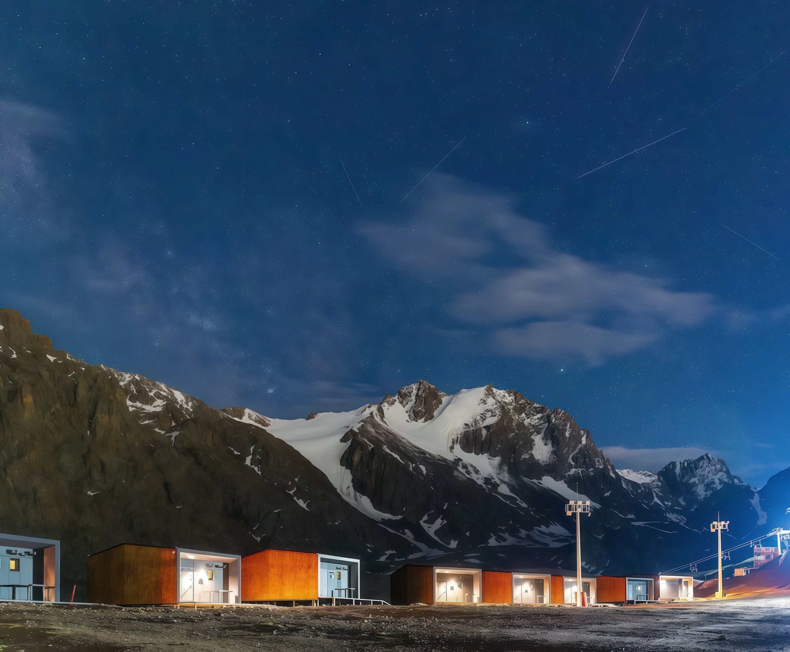
TenirEco Hotel
web-design
Задача:
создать атмосферный лендинг, который передаёт уникальность места: тишину, уединение, близость к природе и ощущение зимнего отдыха над облаками
О бренде:
главная идея бренда — соединить современный комфорт и первозданную природу.
Это место для перезагрузки, созерцания и глубокого отдыха
Позиционирование:
Отель для людей, которые ценят:
приватность;
эстетику;
архитектуру;
осознанный отдых;
впечатления вместо суеты.
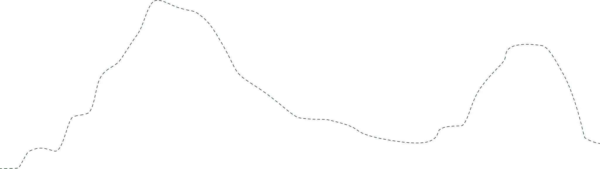
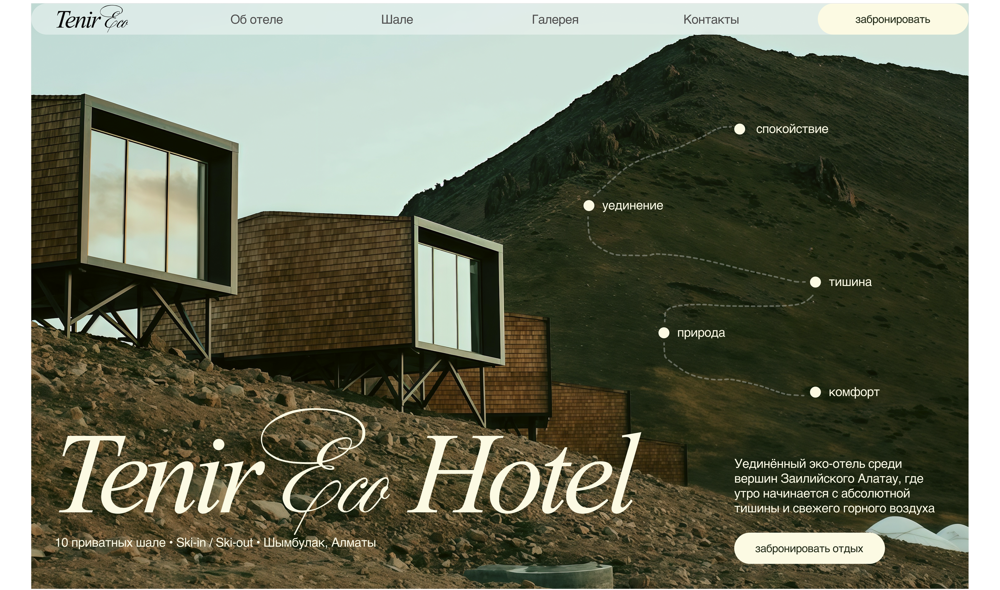
Визуальный образ:
тишина
минимализм
натуральностьритм
Анализ конкурентов (кратко):
Характерно:
использование большого количества панорамных фото;
в тексте упоминание об экологичности материалов, природе вокруг, уединении;
базовые функции: забронировать номер/отель, отзывы гостей, тарифы, активность, мероприятия.
Часто:
неудобная нелогичная навигация;
устаревший дизайн, современность сайта больше передаёт и современность отеля;
визуальный дизайн сайта не передаёт атмосферу отдыха.
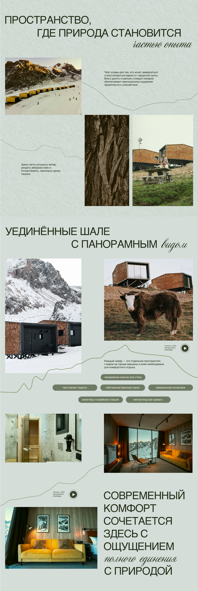
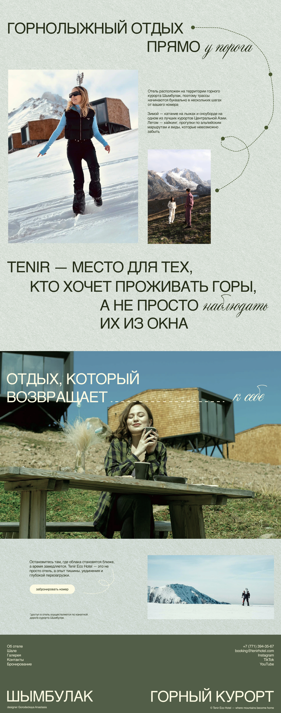
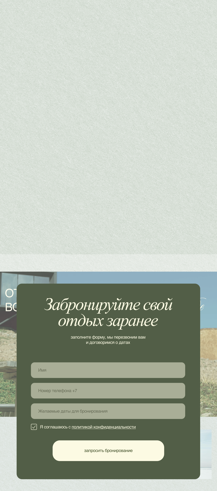
Портреты аудитории:
блогеры инфлюенсеры
- любят богатую жизнь
- амбассадоры брендов
- имеют большое влияние на мнение людей
- много путешествуют и отдыхают
- любят снимать
- стильно одеваются
фотографы
- любят фотографировать
- тянутся к красивым местам
- сотрудничают с брендами, которые могут дать материал для съемок
- часто тянутся к природе
спортсмены,
путешественники
- любят экстрим, горы и природу
- ведут активный образ жизни
- часто путешествуют
- чаще всего ведут свои блоги
Адаптивная верстка:
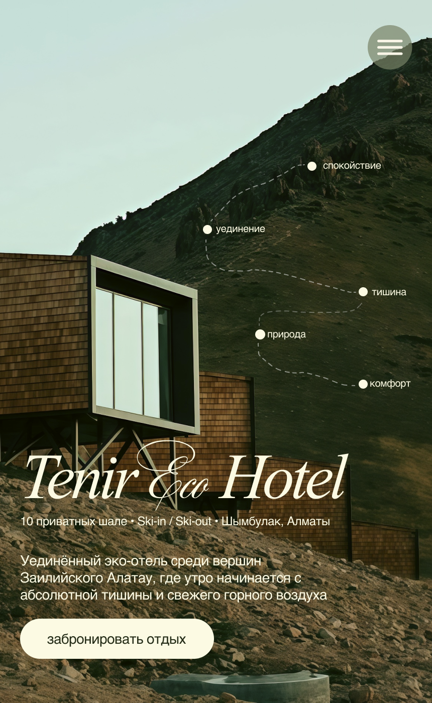
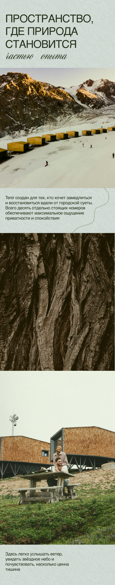
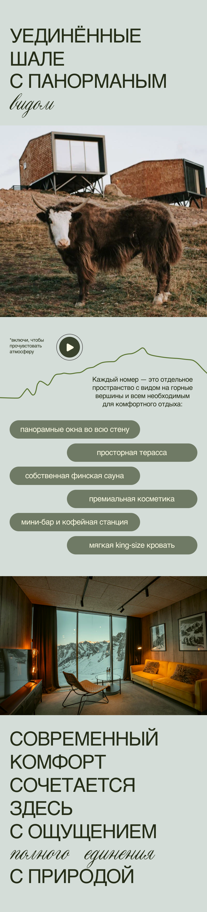
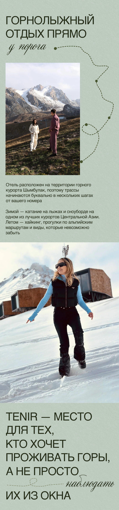
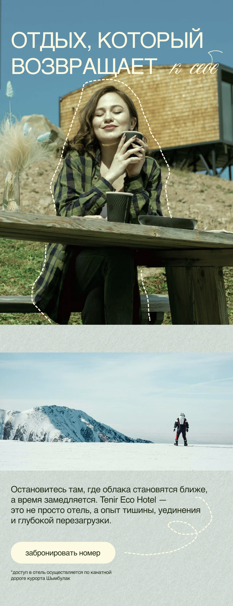
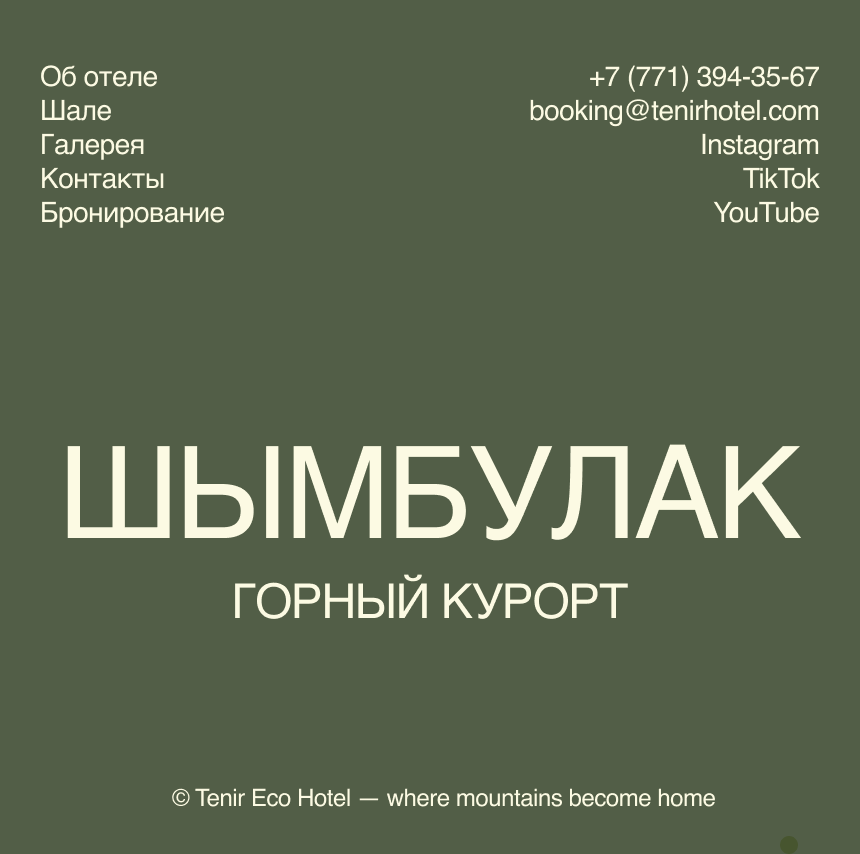
UI-киты:
(обычное, при наведении, при нажатии)
(обычное, при наведении, при нажатии)
Спасибо за просмотр!
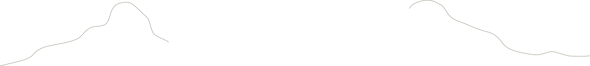